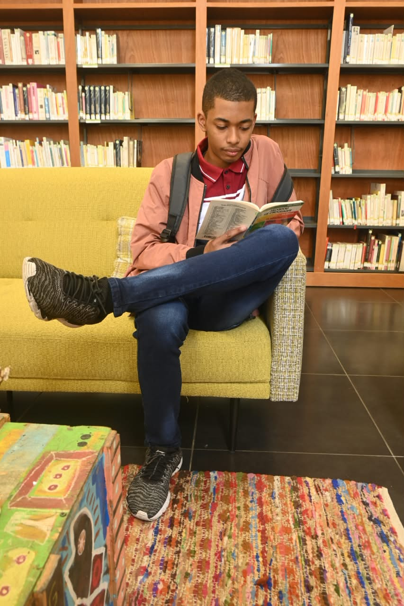

Programmation
PORTFOLIO ÉTUDIANT
Je développe des projets logiciels tout en explorant les réseaux, Linux et la cybersécurité.

Je m'appelle Warren Kenji LELACK et je suis étudiant en informatique appliquée. Je m'intéresse principalement au développement logiciel, tout en développant progressivement mes compétences dans les réseaux informatiques et les systèmes.
J'aime apprendre à travers des projets concrets et expérimenter différentes technologies. Mon objectif est de continuer à développer mes compétences en programmation et en réseaux afin de construire progressivement mon profil professionnel dans le domaine de l'informatique.

Application de gestion de caisse réalisée en C# Windows Forms avec une base de données.
C# · Windows Forms · SQL
Voir sur GitHub
Application permettant de gérer un salaire et de suivre différentes catégories de dépenses.
C# · Windows Forms · Base de données
Voir sur GitHub
Projet de plateforme d'apprentissage destinée à présenter des cours et des ressources en programmation.
HTML · CSS · JavaScript
Voir sur GitHub
Expérimentations autour des réseaux, de TCP/IP, de Wireshark et de la découverte de machines.
Cisco · Wireshark · Linux
Voir sur GitHub
Un mini système dédié à la gestion réseau, au Bluetooth et à l'accès rapide aux services système.
C++ · Réseau · Bluetooth . ESP-32
Voir sur GitHub
Une application C# simple pour gérer une petite liste d’articles, ajouter, modifier et supprimer des éléments rapidement.
C# · WinForms · .NET
Voir sur GitHub
un site de quiz interactif permettant d'évaluer les connaissances sur plusieurs thématiques avec score et classement.
HTML · CSS · JavaScript
Voir sur GitHub
Dashboard météo avec prévisions, conditions actuelles et recherche par ville, développée pour une utilisation simple.
HTML · CSS · API · JavaScript
Voir sur GitHub
Outil de gestion des tâches et des priorités avec suivi de progression, rappel et organisation quotidienne.
Python · Tkinter · SQLite
Voir sur GitHubEn parallèle du développement, je m'intéresse aux réseaux et aux systèmes. Je pratique notamment avec Cisco Packet Tracer, Wireshark et Linux.
Apprentissage des bases de l'informatique et de la programmation.
Création de petits projets en plusieurs langages.
Découverte de TCP/IP, Cisco, Wireshark et de l'analyse réseau.
Utilisation de Linux, Bash et découverte de l'administration système.
Développement progressif de mes connaissances en sécurité informatique.
Vous pouvez me contacter via les réseaux sociaux ou directement par E-mail, WhatsApp et Microsoft Teams.